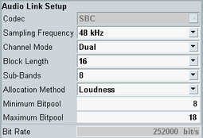

Audio Link Setup
This pane is only visible if operating mode is set to "Profile" and profile is set to "A2DP Sink", see "Operating Mode, Profile".
Option R&S CMW-KS603 is required for A2DP profiles.

A2DP codec settings
The settings are the same as in the configuration tree, see "Audio Link Setup".